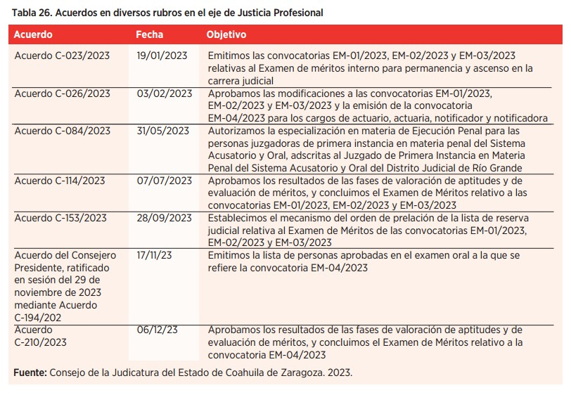

DAMOS CUENTA DEL CÚMULO DE ACCIONES QUE SE HAN TRADUCIDO EN UN SERVICIO OPORTUNO, GRACIAS A LA LABOR PERMANENTE Y COMPROMETIDA DE LOS ÓRGANOS JURISDICCIONALES Y DE LA PRESIDENCIA DEL TRIBUNAL SUPERIOR DE JUSTICIA

La justicia requiere ser más eficaz y eficiente, desde su impartición hasta su ejecución. En el Poder Judicial de Coahuila tenemos la convicción de continuar con el trabajo para fortalecer nuestro Modelo de Justicia y ofrecer un servicio eficiente, accesible y confiable, bajo los mayores estándares de calidad para cumplir con las exigencias de las y los coahuilenses.
Bajo esta tesitura, en este apartado informamos los avances logrados este año al interior del Pleno del Tribunal Superior de Justicia, máximo órgano colegiado; así como las acciones que se tomaron por parte del Consejo de la Judicatura, como órgano de administración y vigilancia para garantizar a la ciudadanía la rápida respuesta a sus problemas con trámites más sencillos, que representen un ahorro en costos y tiempos de traslado, sin obstáculos burocráticos que alarguen los procedimientos.
Adicionalmente, a través del Consejo de la Judicatura, tomamos distintas medidas en el rubro de vigilancia y disciplina, para garantizar la autonomía de los órganos jurisdiccionales y preservar la independencia e imparcialidad de las y los funcionarios públicos de este Poder Judicial.
Una de las apuestas más importantes de esta administración es la tutela efectiva de los derechos de las niñas, niños y adolescentes. Por esa razón, este año iniciamos un registro permanente para el pago de la pensión alimenticia a través de una cuenta bancaria, con el que hicimos más accesible el derecho de alimentos evitando traslados a los juzgados familiares para su cobro.
Asimismo, damos cuenta de las actividades desarrolladas por la Presidencia del Tribunal Superior de Justicia, así como las alianzas estratégicas con instituciones públicas y privadas para fortalecer la labor humanista, social y de derecho de este Poder Judicial. Todo lo anterior lo hemos logrado conscientes del reto que guarda la impartición y administración de justicia, de la responsabilidad institucional y de la vocación de servicio.
PARTICIPACIÓN EN EL SISTEMA ESTATAL ANTICORRUPCIÓN
Uno de los compromisos del Modelo de Justicia de Coahuila es la implementación de una política de cero tolerancia a la corrupción como elemento central para fortalecer la confianza de la ciudadanía en el sistema de justicia.
Por esta razón formamos parte del Comité Coordinador del Sistema Estatal Anticorrupción, y durante este periodo asistimos a 12 sesiones ordinarias, cuatro del órgano de gobierno y una sesión extraordinaria.
Aunado a lo anterior, participamos en la Firma de la Declaratoria para la Cocreación de una Política de Justicia Abierta en el Estado de Coahuila de Zaragoza, y nos fueron entregados diplomas por la participación en el Seminario de Justicia Abierta: Rumbo a la Construcción de una Política de Justicia Abierta en el Estado de Coahuila.
PARTICIPACIÓN EN LA MESA DE COORDINACIÓN PARA LA CONSTRUCCIÓN DE LA PAZ
Uno de los ejes rectores del Gobierno del Estado ha sido el combate al crimen organizado y, en ese sentido, el Poder Judicial participó en 52 reuniones de la Mesa de Coordinación para la Construcción de la Paz.
PLENO DEL TRIBUNAL SUPERIOR DE JUSTICIA
En el Pleno tuvimos 48 sesiones ordinarias y tres extraordinarias, en las que emitimos 211 acuerdos, buscando en todo momento mejorar el acceso pronto y expedito a la justicia, el funcionamiento de los órganos jurisdiccionales y las áreas administrativas de la institución. En este año autorizamos la inclusión de 51 personas a la lista de auxiliares de la administración de justicia y admitimos el trámite de 65 procedimientos judiciales para obtener la patente de notario. Además, integramos y atendimos 231 expedientes auxiliares, en donde fueron emitidos mil 903 acuerdos de la Presidencia del Tribunal Superior de Justicia del Estado de Coahuila de Zaragoza.


En lo referente a la labor jurisdiccional de este Pleno, resolvimos dos recursos de apelación, atendimos nueve juicios de nulidad y 24 juicios de amparo. Respecto a la impartición de justicia a través de mecanismos que permitan vigilar que las leyes y actos de autoridad se apeguen a la Constitución, el Pleno del Tribunal Superior de Justicia, con el carácter de Tribunal Constitucional, celebró cinco sesiones ordinarias en las que fueron emitidos siete acuerdos.
Asimismo, atendimos una cuestión de inconstitucionalidad, la cual fue desechada por el Pleno, así como dos controversias constitucionales y un juicio local para la protección de los derechos humanos solicitando la opinión consultiva del Tribunal, la cual se encuentra en trámite. Además, se atendieron dos recursos de reclamación y durante el periodo que se informa, emitimos un total de 19 acuerdos.
LABORES DESARROLLADAS POR LA SECRETARÍA GENERAL DE ACUERDOS DEL PLENO DEL TRIBUNAL SUPERIOR DE JUSTICIA
La Secretaría General de Acuerdos realiza diversas actividades en relación con la Presidencia y con el Pleno de Magistradas y Magistrados del Tribunal Superior de Justicia, en la cual los asuntos y acuerdos, y las sesiones plenarias en que se desahogan, implican una función importante y delicada por tratarse del órgano máximo del Tribunal.

Durante el periodo que se informa, en la Secretaría General de Acuerdos en el marco de nuestras atribuciones dimos trámite a mil 473 exhortos, nueve cartas rogatorias, 102 incompetencias y 24 legalizaciones de firmas. Adicionalmente, atendimos nueve procedimientos disciplinarios.
Por otra parte, elaboramos 540 constancias a las y los solicitantes correspondientes al registro del título de profesionales del derecho, para su acreditación ante los juzgados y salas del Tribunal, para que puedan ejercer como litigantes en esta institución, y expedimos nueve constancias adicionales de título.
CONSEJO DE LA JUDICATURA
Para el ejercicio de las atribuciones y competencias que constitucionalmente se depositan en el Poder Judicial, en el Consejo de la Judicatura adquirimos un papel notable, ya que nuestra actividad trasciende en una impartición de justicia eficiente, de calidad, profesional, abierta, transparente, innovadora y cercana a la ciudadanía.
Es por ello que los acuerdos que tomamos al interior de este órgano colegiado permiten dirigir el rumbo de este poder público, en una ruta en donde la administración, vigilancia y disciplina constituyen pilares para el avance y mejora constante de las diversas áreas que integran el Poder Judicial.
1. Rubro de Administración

Con el fin de dictar las providencias necesarias para el mejoramiento de la administración de justicia, y expedir los acuerdos generales necesarios para regular el funcionamiento de los órganos del Poder Judicial del Estado, en el Consejo de la Judicatura, durante 2023, llevamos a cabo 20 sesiones, en las que emitimos 210 acuerdos en diversos rubros, de los cuales destacamos los siguientes:



2. Rubro de Vigilancia, acciones desarrolladas por la Visitaduría Judicial General
Para lograr un Poder Judicial eficiente y cumplir con los requerimientos que la sociedad nos exige, es fundamental la revisión atinada del desempeño de los órganos jurisdiccionales y no jurisdiccionales, y para ello, a través de la Visitaduría Judicial General, supervisamos la labor de quienes lo integran y garantizamos el derecho humano al acceso a la justicia pronta y expedita.
La constante revisión al trabajo realizado por las y los juzgadores, del personal que colabora con ellos y de las y los titulares de las áreas que apoyan la función jurisdiccional, permite mejorar nuestra actuación y orientar esfuerzos en ofrecer a la ciudadanía un servicio de calidad.
En el periodo que se reporta realizamos 257 visitas judiciales e inspecciones administrativas que incluyen visitas ordinarias, extraordinarias, especiales de reelección y ejercicios de revisión interjornadas. En este recorrido nuestros visitadores e inspectores pudieron detectar áreas de oportunidad y establecer las recomendaciones pertinentes conforme a los lineamientos establecidos por el Consejo de la Judicatura.
Durante estos ejercicios de visita, recibimos 50 quejas formales y atendimos a 800 personas entre litigantes y justiciables.
Como resultado de estas visitas, el personal de la Visitaduría Judicial General realizó una exhaustiva revisión a más de tres mil expedientes, 700 horas de audiencia, mil 500 libros físicos y 500 libros electrónicos, así como cinco mil auditables tales como informes de trabajo social, dictámenes psicológicos y expedientes de mediación, entre otros.
Además, derivado de estas jornadas fue posible el ahorro de cerca de 70 mil hojas, ya que con el uso de la plataforma de firmado electrónico, las actas de visita se alojan como documentos digitales.
Este año renovamos la rendición de las observaciones recabadas durante las visitas judiciales al Consejo de la Judicatura. Hoy en día se emiten recomendaciones de mejora en el desempeño y labor de los órganos jurisdiccionales y no jurisdiccionales.
También, durante el mes de septiembre realizamos una visita al Poder Judicial de Guanajuato con el fin de establecer el intercambio de buenas prácticas.
Con el propósito de elevar la eficiencia en el trabajo efectuado durante las visitas y obtener datos precisos y verificables, a inicios de 2024 los órganos jurisdiccionales civiles, familiares, mercantiles, laborales y letrados contarán con la implementación de libros electrónicos que coadyuvarán en el desarrollo de sus funciones.
3. Rubro de Disciplina

La tarea de disciplina a cargo del Consejo de la Judicatura tiene como objeto principal el cumplimiento de las obligaciones y deberes por parte del personal, para que las conductas contrarias a las que el Poder Judicial requiere sean atendidas oportunamente, y de esta manera el servicio de impartición de justicia sea eficiente, de calidad y acorde a los principios de orden, constancia y responsabilidad por parte de todas las personas servidoras. En ese entendido, la disciplina es un elemento indispensable para mantener la eficacia de las actuaciones que se desarrollan en este poder público, por lo que en este rubro, durante 2023, en el Consejo de la Judicatura admitimos 201 denuncias o quejas planteadas por las y los justiciables.

En este contexto, resolvimos 263 expedientes administrativos correspondientes al año que se informa, de los cuales emitimos 280 resoluciones debido a que algunos expedientes se instruyeron en contra de varios servidores públicos, así como de años anteriores. A continuación, detallamos los rubros en los que tuvimos actuación:
3.1 Expedientes auxiliares disciplinarios
En este año 2023 radicamos 15 expedientes auxiliares y resolvimos 15, incluyendo de años anteriores, con relación a declarar sin materia el procedimiento por falta de ratificación del escrito de queja, incompetencia, falta de pruebas o porque se le dio un número de expediente administrativo disciplinario.
3.2 Atención a juicios de amparo en los asuntos disciplinarios
Para el periodo que se informa, en el Consejo de la Judicatura fuimos señalados como autoridad responsable en 43 asuntos, de los cuales 17 corresponden a juicios iniciados en 2023, 13 al 2022, dos al 2021, tres al 2020 y ocho al año 2019.
VINCULACIÓN INTERINSTITUCIONAL
Para seguir fortaleciendo un desempeño jurisdiccional cada vez más eficaz, así como cercano y sensible con la ciudadanía, mediante acuerdos estratégicos continuamos con la política de acercamiento con instituciones públicas en el ámbito federal, estatal y municipal, además de instituciones y organizaciones de la sociedad civil, con el objetivo de facilitar y garantizar un efectivo acceso a la justicia, así como contribuir a consolidar un estado humanista, social y democrático de derecho.

Es así como hemos llevado a cabo las acciones necesarias para obtener los canales de comunicación adecuados y oportunos, para que se establezca la debida vinculación y colaboración institucional con el fin de enfatizar los intereses de la ciudadanía coahuilense, a partir de diversos pactos y convenios que atestiguamos y a los que brindamos certeza jurídica.
Este año participamos en la firma del Pacto Coahuila 2023, por la inclusión, igualdad, y justicia laboral entre el Gobierno del Estado y la Secretaría del Trabajo y Previsión Social del Estado, el cual tiene como objeto proteger los derechos laborales de la ciudadanía coahuilense. Asimismo, fuimos testigos de la firma del Memorando de Entendimiento entre World Justice Project y el Comité Coordinador del Sistema Anticorrupción, con el que se busca generar acciones conjuntas en materia de justicia abierta y control de la corrupción.
Firmamos la Declaratoria para la Cocreación de una Política de Justicia Abierta en Coahuila con la Secretaría de Gobierno del Estado, la Secretaría de Fiscalización y Rendición de Cuentas del Estado, la Auditoría Superior del Estado, el Tribunal de Justicia Administrativa de Coahuila, la Fiscalía Especializada en Delitos por Hechos de Corrupción del Estado, el Instituto Coahuilense de Acceso a la Información Pública y la agencia World Justice Project, para garantizar que el actuar jurisdiccional sea accesible mediante los ejes de transparencia, participación ciudadana, rendición de cuentas e innovación.
Refrendamos nuestro compromiso de generar sinergias para la coordinación, colaboración y cooperación con los poderes Ejecutivo y Legislativo, con el objetivo de reforzar el servicio que otorgamos a las personas y garantizar el respeto de los derechos humanos de personas víctimas y usuarias, así como el acceso pronto y expedito a la justicia. De manera que contribuyamos al fortalecimiento del Estado de Derecho y a la construcción de la paz social.
PARTICIPACIÓN EN LA COMISIÓN NACIONAL DE TRIBUNALES SUPERIORES DE JUSTICIA DE LOS ESTADOS UNIDOS MEXICANOS Y EN LA UNIDAD DE DERECHOS HUMANOS E IGUALDAD DE GÉNERO
La Comisión Nacional de Tribunales Superiores de Justicia de los Estados Unidos Mexicanos (CONATRIB) es un espacio donde las presidencias de los 32 Tribunales Superiores de Justicia se reúnen para estrechar los vínculos de colaboración y coordinación, en temas que favorezcan la actualización e innovación de la administración de justicia.
Para el logro de los objetivos trazados, esta comisión se divide en unidades especializadas que se focalizan en representar los rubros que definen la impartición de justicia, una de las cuales es la Unidad de Derechos Humanos e Igualdad de Género, que preside el Magistrado Miguel Felipe Mery Ayup; mientras que a lo largo del año trabajamos coordinadamente con el resto de las unidades para avanzar en temas específicos y crear proyectos a nivel nacional.
Durante el mes de agosto, trabajamos con el Instituto Nacional de las Mujeres para crear un documento que guíe la actuación e implementación de estrategias encaminadas a la protección y seguridad de las mujeres en situación de violencia. De esta forma llevamos a cabo el proyecto en dos fases: la primera de forma virtual el 8 de agosto, con la participación de magistradas, juezas y titulares de unidades de más de 20 estados; y, posteriormente, el 22 de agosto creamos un espacio de diálogo en materia de órdenes de protección, relacionadas con hechos de violencia contra las mujeres, que permitió recuperar las buenas prácticas y los obstáculos a los que se enfrentan los poderes judiciales.
Asimismo, la Unidad de Derechos Humanos e Igualdad de CONATRIB participa en las sesiones ordinarias de la Comisión de Sanción del Sistema Nacional de Prevención, Atención, Sanción y Erradicación de la Violencia contra las Mujeres (SNPASEVM), que aborda los aspectos relacionados a la aplicación de las leyes que reconocen los tipos y modalidades de violencias.
Dentro de dichas sesiones logramos la participación de todas las unidades de tribunales locales y la de áreas jurisdiccionales, en el Ciclo de Conferencias de Sensibilización del Modelo Integral para la Sanción de las Violencias Contra las Mujeres. Dentro de este, en el Poder Judicial de Coahuila contamos con la ponencia “Derecho y prácticas comparadas con otros países en materia de violencia contra las mujeres”, la cual tuvo la asistencia de personas servidoras públicas de instancias administrativas con funciones sancionadoras, de procuración e impartición de justicia, del sistema penitenciario y de las comisiones de víctimas a nivel nacional.
Otro aspecto relevante durante el año que se informa fueron las reuniones de trabajo con colectivos de vicaría de todo el país, así como la asistencia de 20 activistas para crear estrategias de atención y seguimiento en la visibilización de este tipo de violencia.
Finalmente, por tercer año consecutivo, realizamos el Intercambio de Buenas Prácticas de Unidades de Derechos Humanos, en esta ocasión en el estado de San Luis Potosí, con el objetivo de desarrollar metodologías para la identificación y aplicación de buenas prácticas para la transversalización del enfoque de género al nivel institucional en los poderes judiciales, impulsadas por las Unidades, Comisiones y Direcciones de Género de los 32 estados de la República Mexicana. Este fue un ejercicio para conversar, compartir experiencias y, en conjunto, construir mecanismos de coordinación y colaboración a largo plazo.
ACTIVIDADES DE LA PRESIDENCIA DEL TRIBUNAL SUPERIOR DE JUSTICIA

La Ley Orgánica de este poder público establece las facultades del Presidente del Tribunal Superior de Justicia del Estado y en ese sentido el Magistrado Miguel Felipe Mery Ayup desarrolló las siguientes actividades:


COMISIONES DEL PLENO DEL TRIBUNAL SUPERIOR DE JUSTICIA
En las comisiones formadas al interior del Pleno continuamos con reuniones virtuales y presenciales, a fin de homologar criterios que habrán de observarse por las y los juzgadores.
También llevamos a cabo un diplomado en juicios orales mercantiles, así como pláticas de sensibilización sobre la implementación del Nuevo Código Nacional de Procedimientos Civiles y Familiares.
Aunado a lo anterior, durante este año reforzamos las mesas de trabajo y reuniones con colectivos de familiares de desaparecidos, víctimas indirectas de feminicidios y grupos feministas, con el objetivo de dar seguimiento a los trabajos, necesidades y compromisos con dichos colectivos.

1. Comisión de Implementación del Código Nacional de Procedimientos Civiles y Familiares
Con el compromiso de transitar hacia la implementación del Código Nacional de Procedimientos Civiles y Familiares, en el Poder Judicial de Coahuila integramos una comisión que se encargará de supervisar su puesta en marcha. Esta es coordinada por el Magistrado Presidente de la Sala Civil y Familiar, César Alejandro Saucedo Flores, y el Magistrado Presidente de la Sala Regional, Carlos de Lara McGrath, y participan también la Secretaría Técnica y de Transparencia, la Dirección de Innovación y el Instituto de Especialización Judicial.
La comisión tiene como finalidad analizar y homologar las políticas y acciones para la implementación de este código al Nuevo Modelo de Justicia, con el objetivo de que sea más cercano a la ciudadanía y centre su atención en la población infantil, juvenil y con perspectiva de género.
Alineado a los objetivos estratégicos de profesionalización de todas las personas que integran el sistema de justicia y la consolidación de las personas operadoras de justicia, en la Comisión desarrollamos la planeación y ejecución de jornadas de sensibilización al Nuevo Código Nacional en todos los distritos judiciales del estado, las cuales fueron dirigidas a personas servidoras públicas adscritas al Poder Judicial, personas académicas, litigantes, miembros de barras de abogados y público en general.
Esto, con el objetivo de dar a conocer el Nuevo Sistema de Justicia Civil y Familiar previsto en el código, a fin de analizar sus orígenes, principales innovaciones, importancia y los retos que encara su implementación en México y el estado.
En dichas jornadas se plantearon los desafíos en justicia digital y la capacitación en herramientas tecnológicas, las adecuaciones necesarias a la legislación estatal, a la Ley Orgánica, los Juicios Sumarísimos y la capacitación al personal jurisdiccional, abogadas y abogados litigantes, y al personal de defensoría.

Para responder a lo mandatado en el código, los trabajos de implementación de la comisión contemplan la creación de procedimientos administrativos ágiles y eficientes, y la optimización de recursos; además de la agilización de los trámites, la implementación de los juicios orales y el acceso a la justicia a distancia, audiencias virtuales y juicios en línea.
- Comisión de Igualdad de Género Durante el año 2023 la Comisión de Igualdad de Género, integrada por la Magistrada María Luisa Valencia García, de la Sala Colegiada Penal, y las Magistradas María Eugenia Galindo Hernández y María del Carmen Galván Tello, ambas de la Sala Colegiada Civil y Familiar, trabajó con el objetivo de avanzar hacia la consolidación de la perspectiva de género y producir conciencia en temas para erradicar la violencia contra la mujer en razón de género.
Bajo este contexto, en el marco de la conmemoración del Día Internacional de la Mujer, la Magistrada María Luisa Valencia García asistió a la conferencia “Mujeres en combate a la corrupción”, organizada por el Sistema Estatal Anticorrupción del Estado de Coahuila, con la participación de la organización sin fines de lucro TOJIL.
Posteriormente, el 8 de marzo, las magistradas integrantes de esta comisión asistieron al Arranque de preparatoria y licenciatura gratuita para mujeres, organizado por el Poder Ejecutivo; así como al foro de discusión "Hablemos del feminicidio", realizado por alumnos de la licenciatura de Derecho de la Universidad Americana del Noreste (UANE).

Uno de los ejes transversales de este poder público y de la comisión es la cercanía con la sociedad, por lo que llevamos a cabo distintas reuniones con diferentes colectivos en todo el estado, para establecer compromisos, rutas de trabajo conjunto y dar seguimiento a sus peticiones.
Asimismo, colaboramos con la Universidad Iberoamericana de Torreón para que se impartiera el taller de "Acompañamiento y manejo de emociones", para las integrantes del colectivo Madres Poderosas.
Por otra parte, en el mes de agosto, la Magistrada María Eugenia Galindo Hernández participó en la mesa de diálogo "La Judicatura y la academia", en el marco de las actividades de la Cátedra de Derechos Humanos Ministra Ana Margarita Ríos Farjat, que organizó la Defensoría de los Derechos Humanos Universitarios de la Universidad Autónoma de Coahuila.
Finalmente, en el mes de octubre realizamos una campaña para la prevención del cáncer de mama en os ocho distritos judiciales, en las que por medio de pláticas de personal de la Secretaría de Salud buscamos concientizar y sensibilizar sobre la autoexploración y prevención del cáncer a más de 350 asistentes. En dicha actividad también se otorgaron pases gratuitos para mastografías, papanicolaou y exploración de mama.
UNIDAD JURÍDICA
La Unidad Jurídica desempeña un papel fundamental en el aseguramiento del cumplimiento de normativas vigentes en cuanto a procesos de licitaciones públicas y contratos de prestación de servicios, entre otros, proporcionando asesoría legal integral y fortaleciendo la estructura jurídica del Poder Judicial.


En el ámbito de la elaboración de contratos, en la Unidad Jurídica hemos elaborado 178 contratos en diversas modalidades, entre los que se encuentran: 84 contratos de prestación de servicios, 90 contratos asimilados a salarios, un contrato de compraventa, un dictamen y dos contratos de arrendamiento.
En el ámbito de la tramitación de juicios laborales, gestionamos exitosamente 37 casos. De igual forma, mediante esta unidad damos trámite y seguimiento, ante el Tribunal de Conciliación y Arbitraje, a los conflictos laborales que se susciten entre este poder público y sus trabajadores.

Además, a través de la Unidad Jurídica enfrentamos y resolvemos situaciones legales para dar garantía a la protección de los derechos del Poder Judicial frente a posibles controversias, y este año atendimos 82 juicios de amparo.